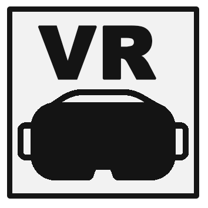

Projects
Improve navigation system design
In a fast-paced digital society, individuals increasingly rely on computerized location-based services to efficiently find their way through unfamiliar environments. However, scientific evidence is showing that despite digital navigation assistance helping people to find their way, it can cause wayfinders to become ``mindless” of the traversed environment, thus acquiring no or very little spatial knowledge in the long term. It is still not entirely clear what causes these impairments or how the design of navigation devices can be improved to counteract such undesirable effects. One promising solution to counteract the negative influeces of using such devices on spatial learning may be the inclusion of global landmarks. In my PhD project, I investigated if paying attention to globally visible landmarks in the environment may increase our spatial knowledge even in situations of limited cognitive resources, for example when a navigator is experiencing stress. My findings revealed that globally visible landmarks can improve spatial learning during navigation. Additionally, I have identified a number of cognitive and contextual conditions that impair users’ ability to take advantage of globally visible landmarks for spatial learning. Based on these conditions, I could provide empirically grounded design guidelines for future learning-aware navigation systems. Check out my doctoral thesis, if you want to know more!Methods

Publications
Credé, S., Thrash, T., Hölscher, C., & Fabrikant, S. I. (2019). The advantage of globally visible landmarks for spatial learning. Journal of Environmental Psychology.
Thrash, T., Lanini-Maggi, S., Fabrikant, S. I., Bertel, S., Brügger, A., Credé, S., … & Richter, K. F. (2019). The Future of Geographic Information Displays from GIScience, Cartographic, and Cognitive Science Perspectives. In COSIT 2019 (Vol. 142, pp. 19-1).
Credé, S., Thrash, T., Hölscher, C., & Fabrikant, S. I. (2019). The acquisition of survey knowledge for local and global landmark configurations under time pressure. Spatial Cognition & Computation, 1-30.
Credé, S., Thrash, T., & Fabrikant, S. I. (2018). The effect of concurrent task load on the acquisition of local and global landmark knowledge. Spatial Cognition 2018 Posters, book of abstracts.
Credé, S., Fabrikant, S. I., Thrash, T., & Hölscher, C. (2017, September). Do Skyscrapers Facilitate Spatial Learning Under Stress? On the Cognitive Processing of Global Landmarks. In International Conference on Spatial Information Theory (pp. 27-29). Springer, Cham.
Credé, S., & Fabrikant, S. I. (2017, September). Let’s Put the Skyscrapers on the Display—Decoupling Spatial Learning from Working Memory. In International Conference on Spatial Information Theory (pp. 163-170). Springer, Cham.
Designing architecture for the wayfinders’ expactations
Expectations are essential for our daily behavior and emotions. Our efficiency in solving everyday tasks is often fundamentally based on mechanisms that allow us to make predictions about what is next while talking into account the current context and previous experiences. In UX research we strive to understand and use these expectations to improve the usability of products. However, in building architecture, scientific insights about the role of expectations are scarce. This is crucial, as people often get lost during the search for destinations in complex indoor structures.If we know what people expect of a buildings structure and understand the factors that shape these expectations, we can use this knowledge to improve building design. In my Master’s, I studied peoples’ expectations of a building’s geometry beyond the current line of sight. Do such expectations rely on configurational variables (e.g., symmetry, good form) of the currently perceived building part? By having participants watch virtual building walks we systematically examined how configurational variables influenced expectations about the hallway structure of unknown building parts. The results of this study demonstrate that during indoor navigation, people use backgreound knowledge and tend to expect closed hallway structures and symmetrical layouts. Insights of peoples’ spatial expectation should be considered in the design of building layouts or when planning emergency exits.
Methods
Publications
Credé, S., Hölscher, C., & Frankenstein, J. (2014). Spatial Expectations in Indoor Environments. In Abstracts of the 56th Conference of Experimental Psychologists (Vol. 56, pp. 49-49). Pabst Science.
Profile pictures portray identity
Who are you? I am the unique guy that I show on facebook on twitter! The technical term individualization describes not only a personal urge to be unique, but also the modern task of the individual to tell a convicing story and be something special. In this research project, I have examined the role of social media and the profile picture in the production of one’s self-image or psychological identity. With the help of qualitative, empirical methods, I was able to show that social media is an integral part of younger people’s social practice and their personal identity. This was most clearly expressed in the interviewees critical judgments about social media practices of others. Specifically, the findings of this study have shown that online self-presentation is critically evaluated according to its correspondance with offline ‘reality’. The interviewees often justify their criticism of others with the common sense conception of identity as being something fixed and coherent that should not differ between situations.Methods
Publications
Sascha Credé (2012). Das Facebook-Profilbild als soziales Dokument – Eine rekonstruktive Analyse. Albert-Ludwigs-Universität Freiburg. B.A.